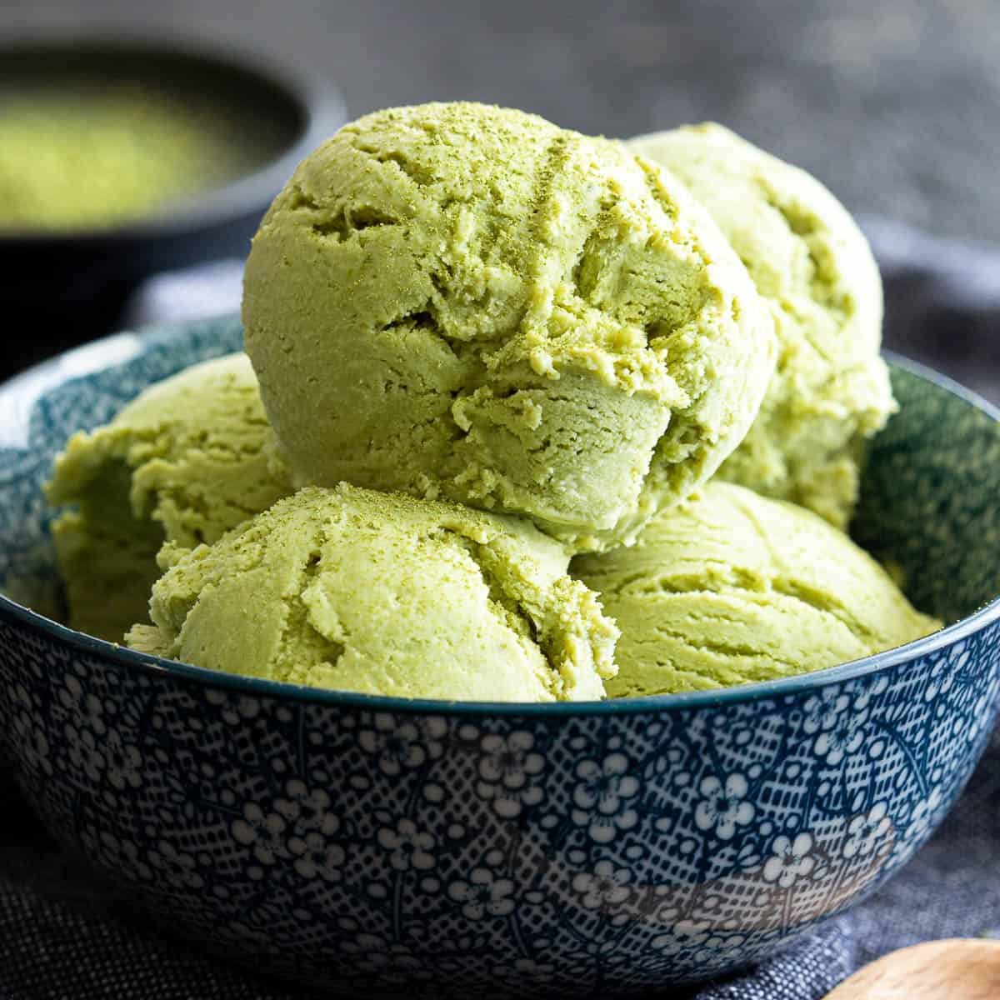
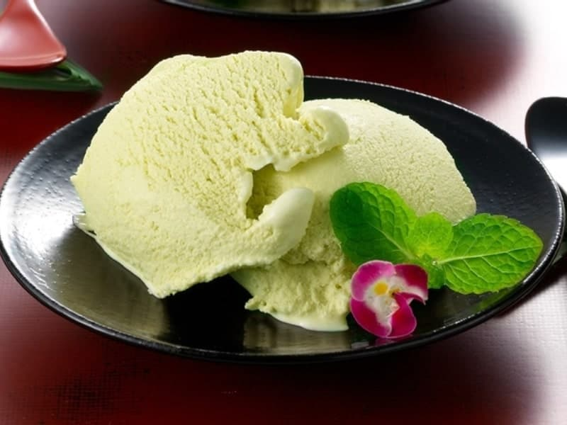

Matcha Ice Cream
Over the years, Japan’s Matcha has grown a following for its bitter-yet-sweet flavor—making it the perfect fit for an ice cream flavor!
Wasabi Ice Cream
Wasabi, hailing from Japan, with its spicy-tingly aftertaste would become an ice cream flavor! Its clean, fresh flavor tinged with spice is very unique.
Queso Ice Cream

Queso! This flavor made of cheddar cheese has become a staple in Filipino gatherings—equipped with a cheesy and nostalgic flavor.